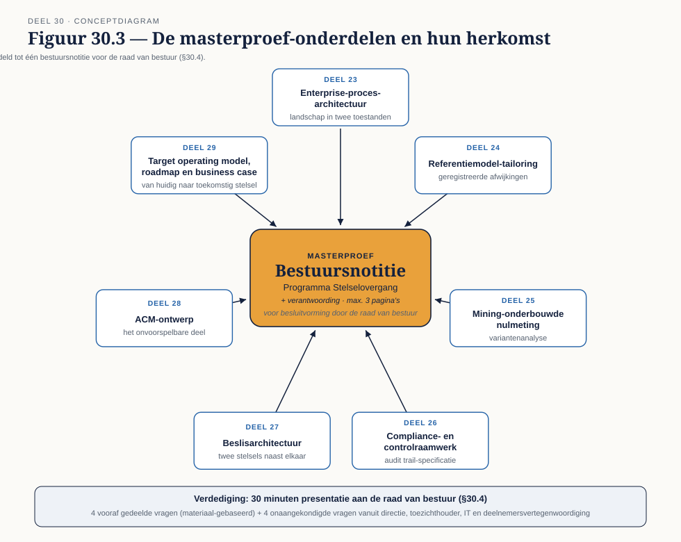

Deel 30 — Masterproef
Slidedeck · Ductus-cursus BPMN, CMMN & DMN · niveau 3 · deel 30 van 30 · 18 slides
Slide 1 — Titelslide
Masterproef — Deel 30
Slide 2 — Leerdoelen
Na dit deel kun je…
Slide 3 — Examenblauwdruk OCEB 2 Business Advanced
Minder herkenning, meer oordeelsvorming

Slide 4 — Opdracht 1
Proefexamen 1 — 30 vragen, 75 minuten
Slide 5 — Nabespreking proefexamen 1
Welke vragen, welk domein, welke denkfout?
Slide 6 — De CBPP-aanvraag
Examen plus aantoonbare werkervaring

Slide 7 — Wat te documenteren
Rol, periode, verantwoordelijkheid — liever nu dan achteraf reconstrueren
Slide 8 — Opdracht 2
Proefexamen 2 — 30 vragen, 75 minuten
Slide 9 — Nabespreking proefexamen 2
Zelfde aanpak als proefexamen 1
Slide 10 — De masterproef
Eén transformatieontwerp, zeven onderdelen

Slide 11 — De bestuursnotitie
Maximaal drie pagina's, bestuurstaal
Slide 12 — De verantwoording
Wat gaat er niet lukken, en waarom?
Slide 13 — Opdracht 3
Stel de masterproef samen — de kerndeliverable
Slide 14 — De verdediging
30 minuten presentatie, half voorbereid, half onvoorzien
Slide 15 — Vier vooraf gedeelde vragen
Doorlooptijd · kosten en baten · wat wijkt bij een derde korter · wie onderhoudt dit
Slide 16 — Vier rollen, onbekende vragen
Directie · toezichthouder · IT · deelnemersvertegenwoordiging
Slide 17 — Opdracht 4
De verdediging
Slide 18 — Afsluiting
Van Deel 1 tot Deel 30 — procesdenken tot transformatieontwerp